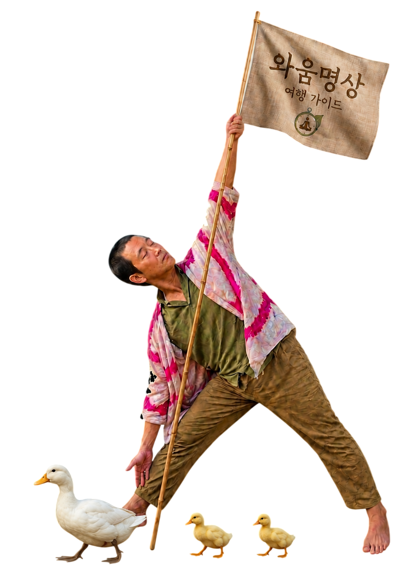

✦ 텍스트를 클릭하면 바로 수정할 수 있습니다 ✦
역할 말고, 나로 있는 토요일
매주 토요일 정기 진행 · 90분새 한 주가 시작되기 전, 아직 고요한 토요일 아침에.
한 주가 저물어가는 토요일 저녁, 빛이 부드러워지는 그 시간에.
한 주 내내, 우리는 누군가의 역할로 살았습니다. 일잘러로, 좋은 동료로, 다정한 자식으로, 무너지지 않는 어른으로.
그러다 문득, 이런 생각이 듭니다. "이 일이 나에게 맞는 걸까." "왜 멀쩡한데 마음에 구멍이 난 것 같지." "가면을 벗으면 그 안엔 뭐가 남아 있을까."
숲은 당신의 직함을 묻지 않습니다. 연봉도, 결혼 여부도, 어제의 실수도 묻지 않습니다. 그저 있는 그대로의 당신을 맞이할 뿐입니다.
90분 동안, 사회적 이름을 잠시 내려놓고, 빛과 바람과 나무의 숨에 의식을 얹어보세요. 그리고 일상으로 돌아갈 때, 단 하나의 씨앗말을 가지고 내려갑니다. — 내 삶의 중심을 잡아주는, 진짜 나의 한 단어.
가볍게 오셔도 됩니다. 숲이 기다리고 있습니다.
명상 경험이 없어도 괜찮습니다. 특별한 준비 없이 오셔도 됩니다.

신청 방법 : 링크 또는 연락처를 통해 신청해주세요.
문의 : 인스타그램 @____ / 이메일 ____@____